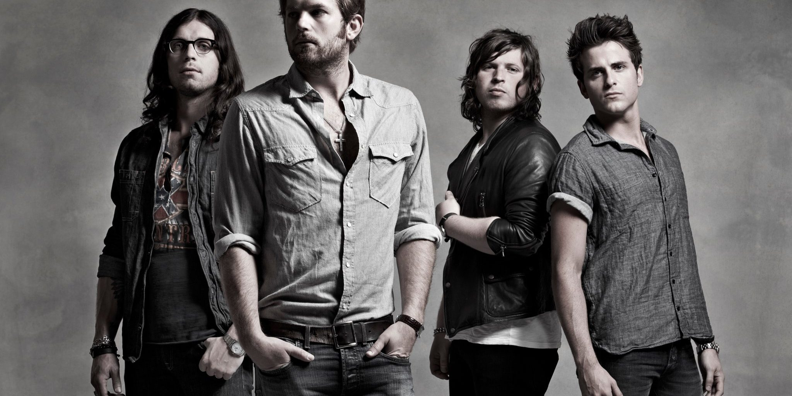

Tributo a los Arctic Monkeys
Esta banda britanica me llego a cautivar con un indie-rock muy acelerado y agradable. Desde el año 2008 les seguí la pista al escuchar la canción Fluorescent adolescent. Seguidamente en el mismo albúm otra canción que me gusto demasiado para aquellos días fue Brianstorm, me encanto sobre todo por la batería, mucha potencia en lo que fue una canción muy movida


Banda de Familiares
Los hermanos Followill formaron una banda que de un momento para otro resulto ser un fenomeno del rock alternativo. A mi parecer una de sus mejores canciones que concuerdo con la mayor parte de la audiencia es Use Somebody y Sex on Fire las cuales tuvieron muy buenas criticas en los años 2009 con su disco Only by the Night.